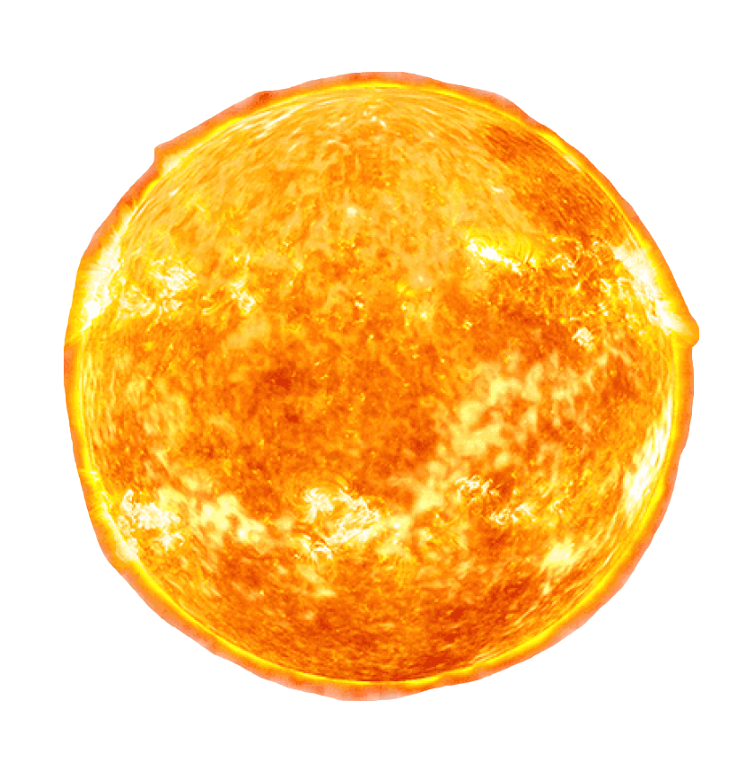
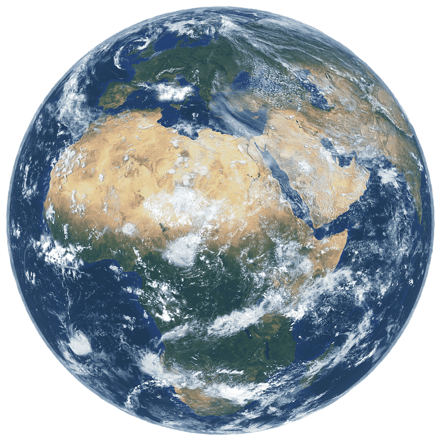
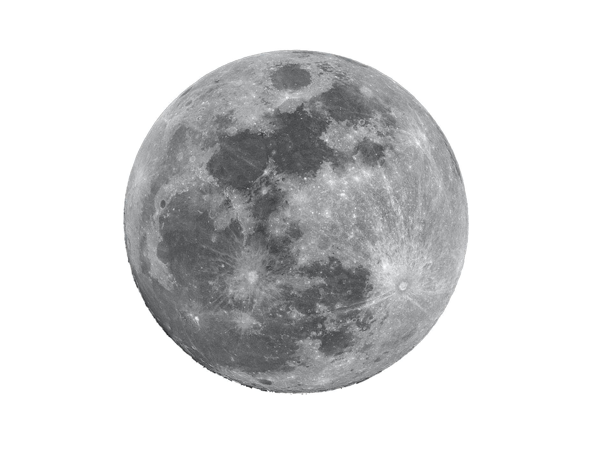
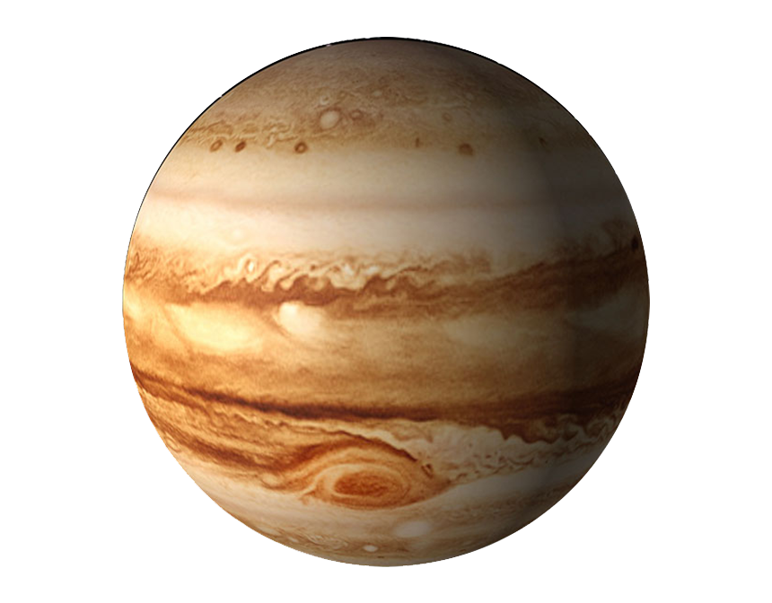
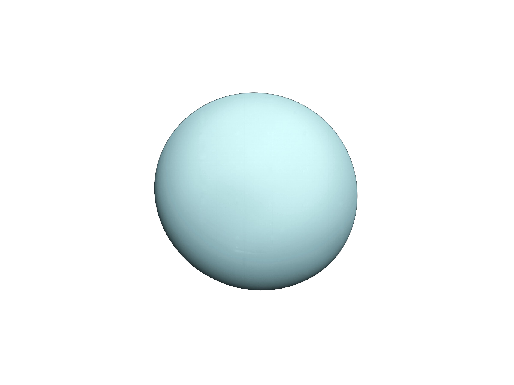
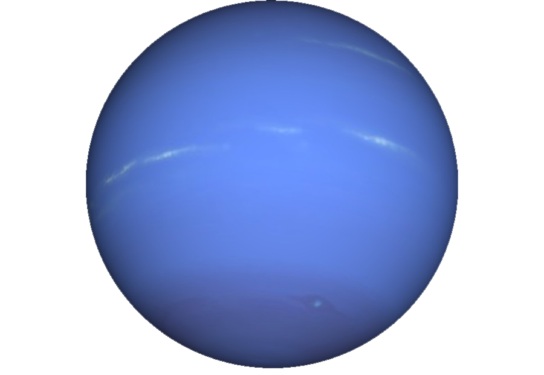
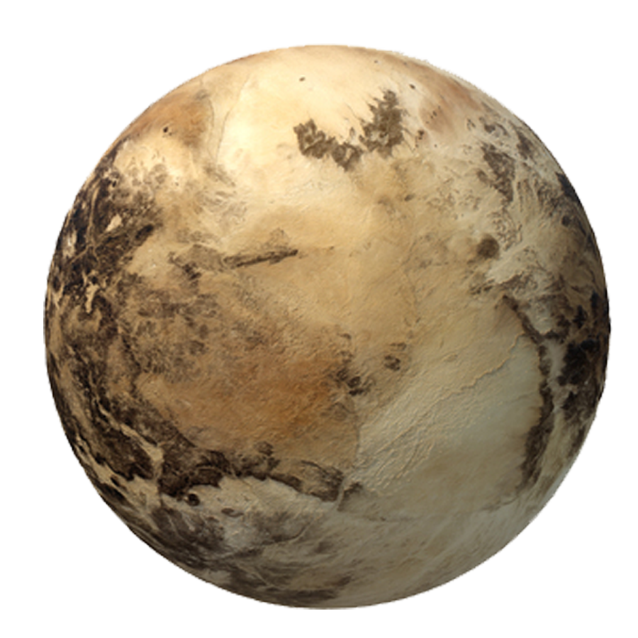

l'Astronomie
l'Astronomie
l'Astronomie

Age : 4,603 milliards d'années
Le Soleil
Le Soleil est l’étoile du Système solaire. Dans la classification astronomique, c’est une étoile de type naine jaune d'une masse d'environ 1,989 1 × 10³⁰ kg, composée d’hydrogène et d’hélium.

Age : 4,503 milliards d'années
Mercure
Après la Terre, Mercure est la deuxième planète la plus dense. Mercure est la planète la plus proche du Soleil. La planète est nommée d'après le dieu romain du commerce, qui était connu pour être très rapide. Le mercure n'a pas d'atmosphère, donc il ne retient pas la chaleur du soleil.

Age : 4,503 milliards d'années
Vénus
Vénus est la deuxième planète du Système solaire par ordre d'éloignement au Soleil, et la sixième plus grosse aussi bien par la masse que le diamètre. Elle doit son nom à la déesse romaine de l'amour. Vénus orbite autour du Soleil tous les 224,7 jours terrestres.

Age : 4,543 milliards d'années
Notre belle planète bleue
La Terre est la troisième planète par ordre d'éloignement au Soleil et la cinquième plus grande du Système solaire aussi bien par la masse que le diamètre.
Par ailleurs, elle est le seul objet céleste connu pour abriter la vie.

Age : 4,53 milliards d'années
La Lune
La Lune, dite aussi Terre I, est l'unique satellite naturel permanent de la planète Terre. Il s'agit du cinquième plus grand satellite naturel du Système solaire, et du plus grand des satellites planétaires par rapport à la taille de la planète autour de laquelle il orbite.

Age : 4,603 milliards d'années
Mars
Mars est la quatrième planète du Système solaire par ordre croissant de la distance au Soleil et la deuxième par ordre croissant de la taille et de la masse. Son éloignement au Soleil est compris entre 1,381 et 1,666 UA, avec une période orbitale de 669,58 jours martiens.

Age : 4,603 milliards d'années
Jupiter
Jupiter est la cinquième planète du Système solaire par ordre d'éloignement au Soleil, et la plus grande par la taille et la masse devant Saturne, qui est comme elle une planète géante gazeuse.

Age : 4,503 milliards d'années
Saturne
Saturne est la sixième planète du Système solaire par ordre d'éloignement au Soleil, et la deuxième plus grande par la taille et la masse après Jupiter, qui est comme elle une planète géante gazeuse.

Age : 4,503 milliards d'années
Uranus
Uranus est la septième planète du Système solaire par ordre d'éloignement au Soleil. Elle orbite autour de celui-ci à une distance d'environ 19,2 unités astronomiques, avec une période de révolution de 84,05 années terrestres.

Age : 4,503 milliards d'années
Neptune
Neptune est la huitième planète par ordre d'éloignement au Soleil et la plus éloignée connue du Système solaire. Elle orbite autour du Soleil à une distance d'environ 30,1 au, avec une excentricité orbitale moitié moindre que celle de la Terre et une période de révolution de 164,79 ans.

Age : 4,6 milliards d'années
Pluton
Pluton, officiellement désignée par Pluton, est une planète naine, la plus volumineuse connue dans le Système solaire, et la deuxième en ce qui concerne sa masse. Pluton est ainsi le neuvième plus gros objet connu orbitant directement autour du Soleil et le dixième par la masse.